La página independiente incorpora los equipos del cuarto original, conservando su escala, identificadores y posición digital: dos MTU, generadores, escapes, cuadros, válvulas, bombas, climatización, pasarelas y filtros de mar. Iluminación ambiente horneada, sondas locales y materiales con mapas físicos aportan el nuevo acabado.
Se abre desde el selector o el plano de cubierta inferior. El cuarto tiene su propio recorrido interior; todavía no se añade una conexión caminable a las escaleras de servicio desde los exteriores.
K abre Motores / Filtros de mar. Selección babor/estribor, corte, reproducir/pausar, reinicio y ciclo manual. Ocho segundos representan 720° nominales del cigüeñal. El otro motor conserva su exterior. Los filtros permiten abrir el registro y la tapa, extraer/reinsertar el cesto y comparar limpio/sucio. Apártate del registro para abrirlo; el hueco bloquea el paso. E acciona la puerta cuando está al alcance.
Los interiores mecánicos se descargan al pedirlos. Salir del cuarto o esconder la pestaña pausa el movimiento; expulsar la zona de la caché libera sus geometrías y texturas de inspección.
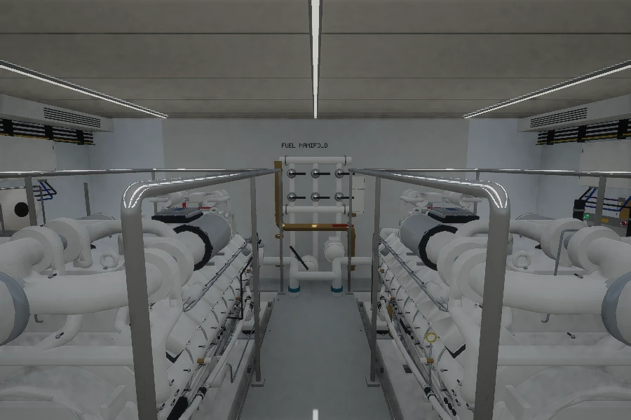
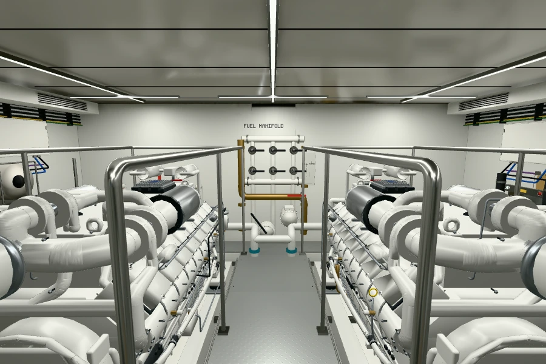
Misma cámara fuente: 8.62, 0, 3.18 → 11.7, 0, 2.75. HFOV 90° / VFOV 67,38°; 900 × 600, DPR 1. Son renders del modelo; esta comparativa no demuestra coincidencia con la fotografía de la VR.
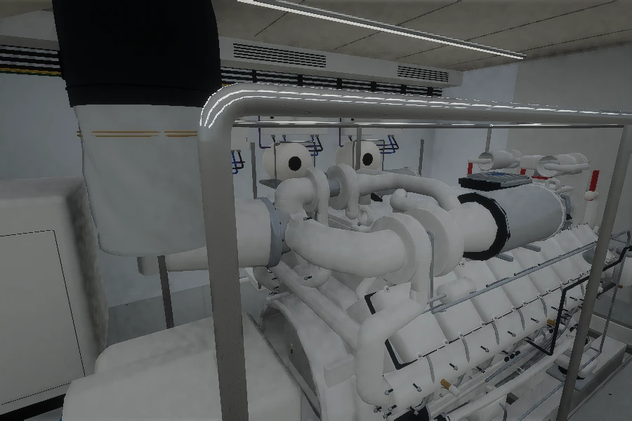
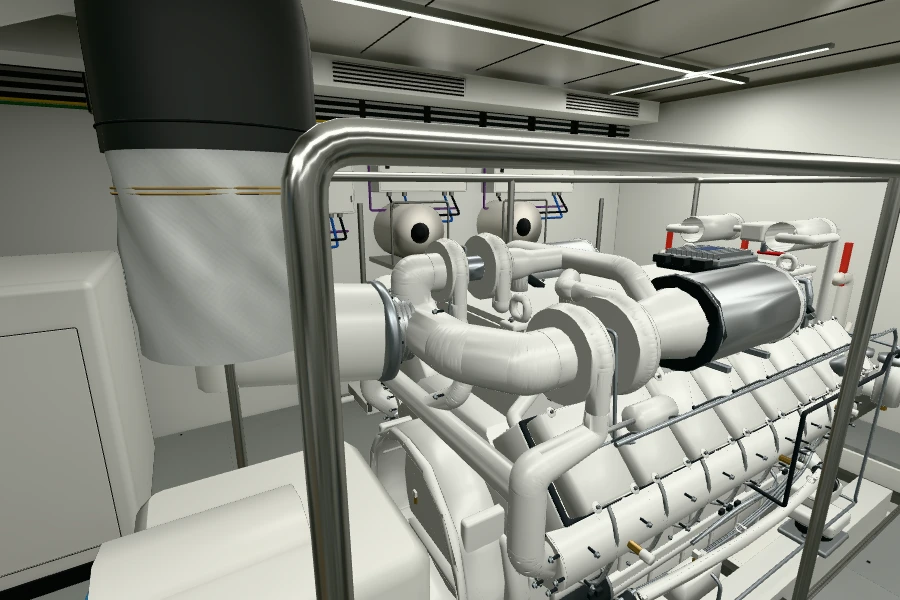
Misma cámara fuente: 9.25, 0, 3.08 → 10.85, 2.7, 2.3. HFOV 90° / VFOV 67,38°; 900 × 600, DPR 1. Son renders del modelo; esta comparativa no demuestra coincidencia con la fotografía de la VR.
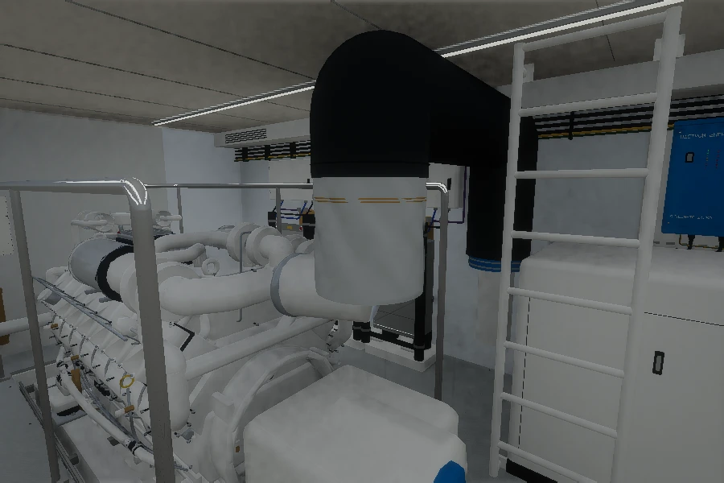
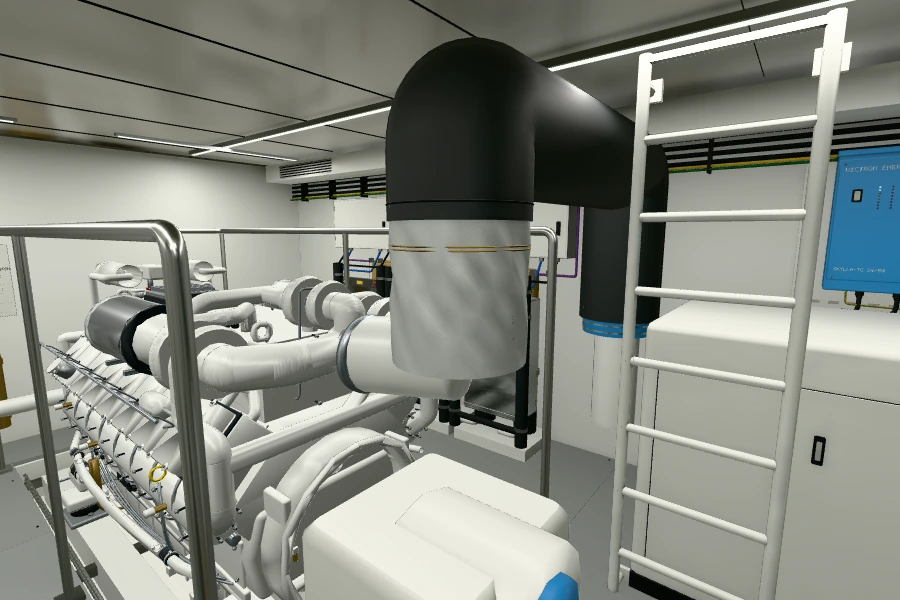
Misma cámara fuente: 8.45, -0.1, 3.12 → 10.6, -2.8, 2.6. HFOV 90° / VFOV 67,38°; 900 × 600, DPR 1. Son renders del modelo; esta comparativa no demuestra coincidencia con la fotografía de la VR.
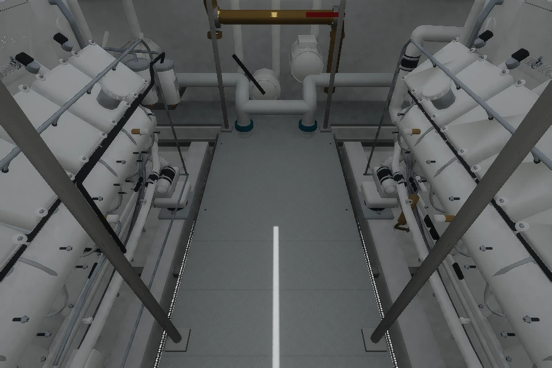
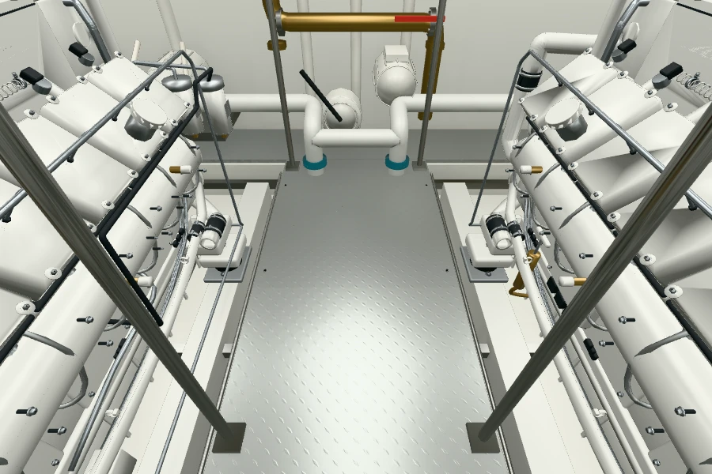
Misma cámara fuente: 10.4, 0, 2.9 → 11.8, 0, 1.58. HFOV 90° / VFOV 67,38°; 900 × 600, DPR 1. Son renders del modelo; esta comparativa no demuestra coincidencia con la fotografía de la VR.
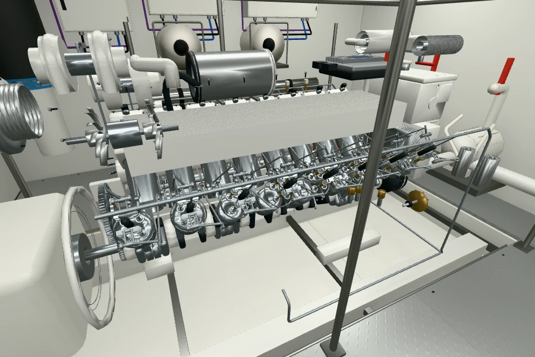
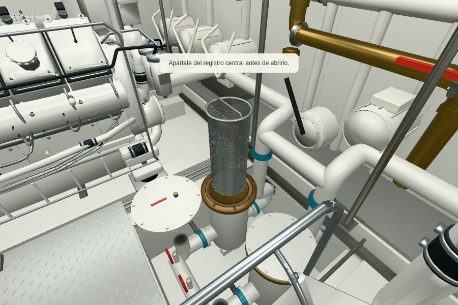
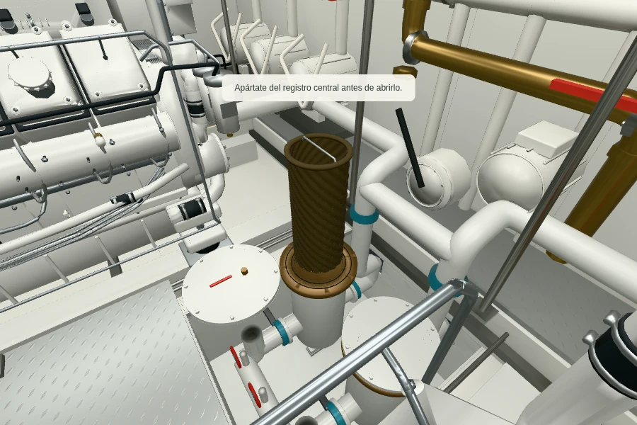
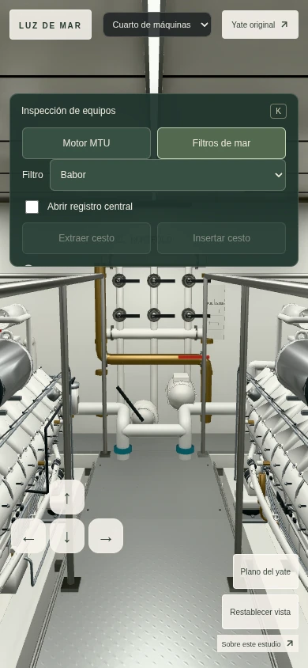
Ruta comprobada: visita 360° → icono del barco → LOWER → cuarto punto negro desde la derecha, «Engine Room». Se inspeccionaron las seis caras completas de 2048², doce vistas horizontales, cuatro de techo, cuatro de suelo y cuatro acercamientos útiles. Cuatro intentos diagonales con zoom dieron gris y se excluyeron. Se conserva un registro de 32 observaciones, cámaras, enlaces y hashes; las fotografías permanecen fuera del sitio y de los archivos publicados.
La VR muestra techo blanco brillante, más segmentos LED, fundas textiles negras y plateadas, metal pulido, rejillas ocres y cuadros característicos. Esta revisión corrige el patrón de chapa perdido al importar, ajusta el brillo del techo y añade cuatro segmentos LED transversales y una rejilla ocre sobre el suelo existente. Sus posiciones son estimadas.
La disposición del SHORE POWER SYSTEM, la columna de seccionadores de batería, las alarmas y algunos accesorios de motor aún difieren. Se mantienen los equipos del modelo original; esta entrega no reproduce cada pieza fotografiada. La visita identifica un Grande 36M y no confirma la identidad del casco como Luz de Mar. El filtro de las fotos del propietario queda oculto y su instalación digital sigue estimada.
| Referencia | Observación en VR | Contraste con la importación |
|---|---|---|
| VR-ER-01 | Dos motores blancos longitudinales, paralelos, con tapas, tuberías, mangueras y fijaciones visibles. | La disposición general se conserva; el exterior del ZIP es nominal y sus accesorios no coinciden uno por uno con la fotografía. |
| VR-ER-02 | Barandillas de tubo inoxidable pulido rodean los dos motores; curvas amplias, dobles travesaños y soportes. | Conservar el recorrido de tubos y apoyos del original; ajustar las reflexiones y revisar las siluetas frente a la VR. |
| VR-ER-03 | Pasarela central estrecha que desemboca en una circulación transversal más ancha. Placas desmontables y agujeros circulares negros. | El original conserva paneles y registro, pero requiere comparar su contorno en T y los detalles de la chapa. |
| VR-ER-04 | Chapa de aluminio con grupos de resaltes diagonales, juntas entre placas y cantos sobre fosos. | Detectado durante la revisión: el patrón 35 del suelo original no estaba asignado a la textura de chapa en la importación preliminar. |
| VR-ER-05 | Rejillas antideslizantes ocres sobre la circulación transversal y delante de los equipos laterales, en piezas irregulares. | Faltan en la importación preliminar. Su material exacto y dimensiones no se identifican en la imagen. |
| VR-ER-06 | Techo blanco brillante formado por paneles estrechos, juntas finas y bandas transversales atornilladas. Refleja equipos y luminarias. | El original incluye techo y juntas; el material preliminar se ve más mate y oscuro que la referencia. |
| VR-ER-07 | Tiras LED delgadas longitudinales y varios segmentos transversales. Se distinguen diodos, extremos y pequeñas fijaciones. | El original contiene tres tiras longitudinales. Faltan segmentos transversales observados; la potencia real no está medida. |
| VR-ER-08 | Dos grandes conductos de escape curvados con recubrimiento negro granular. Bandas textiles negras cruzan las uniones y tienen costuras. | El original conserva la ruta general y algunas costuras. La textura, las bandas y los soportes requieren más detalle. |
| VR-ER-09 | Fundas plateadas acolchadas alrededor de los codos y turbos: pliegues irregulares, costuras claras y varios cierres de gancho. | No deben representarse como tubos rígidos metálicos lisos. Las fundas originales son aproximadas. |
| VR-ER-10 | Manguitos azules en conexiones verticales bajo los escapes, sujetos por varias abrazaderas de acero. | El original ya incluye manguitos y abrazaderas; contrastar color, separación y posición. |
| VR-ER-11 | En el mamparo del frente h=0: conjunto compacto de tubos blancos, codos de metal amarillo, palanca roja, motor eléctrico blanco y cuerpo circular con palanca amarilla. | El original lo llama FUEL MANIFOLD y simplifica el conjunto. La panorámica no permite verificar por sí sola esa función ni todos sus circuitos. |
| VR-ER-12 | Armarios claros en el frente: se lee EPU en el mayor del sector izquierdo y ECO R en otro menor. Cajas pequeñas tienen entradas de cables y módulos verticales. | La distribución y la rotulación del original son aproximadas. No copiar funciones o estados eléctricos sin esquema. |
| VR-ER-13 | En el sector derecho del frente se leen SCU y MTU, junto a un armario con pantalla pequeña, pilotos y mandos. | La etiqueta MTU es visible; no se lee una placa que pruebe aquí el modelo 16V2000M96 ni números de serie. |
| VR-ER-14 | Dos secciones superiores de cuadros EURO EL con pantallas Woodward, diagramas finos, pilotos y pulsadores de varios colores; filas inferiores de protecciones detrás de tapas transparentes. | Existe una aproximación en el original; faltan correspondencia fina de filas, tapas, textos y bisagras. Los estados de pilotos son los de la fotografía. |
| VR-ER-15 | Cuadro rotulado SHORE POWER SYSTEM en h=180: dos palancas superiores, selector general inferior, voltímetro y otros indicadores. | No es intercambiable visualmente con los dos convertidores genéricos del original. Requiere reconstrucción de su frente. |
| VR-ER-16 | Debajo del cuadro de puerto hay una envolvente blanca con cuatro columnas de ranuras estampadas, tapa, tornillos y dos argollas. | La función concreta y los componentes internos quedan sin verificar; no asignar un fabricante por su aspecto. |
| VR-ER-17 | Columna lateral con cuatro seccionadores circulares rojos grandes y varios interruptores menores con maneta o llave, cada uno con etiqueta. | Falta su disposición reconocible en la importación preliminar. La lectura parcial de etiquetas no demuestra el cableado. |
| VR-ER-18 | Dos cajas azules grandes Victron Energy y una unidad azul menor en el mamparo lateral, con pilotos y cables inferiores; junto a conductos verticales de cobre. | La familia está representada en el original; verificar cantidades, tamaños relativos, soportes y cableado. No asignar referencias de modelo ilegibles. |
| VR-ER-19 | Dos generadores en envolventes blancas laterales. KOHLER es legible, además de puertas con tiradores oscuros y controlador en uno de ellos. | Ambos generadores existen en el original. La VR no confirma su potencia ni la referencia 80EOZDJ del rótulo digital. |
| VR-ER-20 | Escotilla de techo sobre un generador y escalera blanca vertical visible en h=90. Se distinguen el marco, herrajes y peldaños. | Conservar el acceso documentado. Su destino superior y altura exacta no quedan acreditados por una sola panorámica. |
| VR-ER-21 | Paso de servicio en h≈232°: el hotspot de la visita enlaza con Lazarette (ath=-128.080°, atv=2.431°). | No inventar una conexión directa desde los pasillos exteriores. La dirección del hotspot no mide el ancho ni la altura del paso. |
| VR-ER-22 | Cajas y campanas blancas altas con ventiladores de rejilla circular orientados hacia abajo, paneles de control y tuberías de cobre. | La geometría original de climatización/ventilación es simplificada. La VR no demuestra qué unidad sirve a cada sistema. |
| VR-ER-23 | Caja de intercomunicación, auricular o conjunto acústico y protección auditiva colgada, con cables que bajan por el mamparo. | El original conserva formas de intercomunicación y protección auditiva; contrastar su ubicación y tamaño. |
| VR-ER-24 | Unidades blancas circulares ranuradas junto al techo y un elemento circular metálico en la cara superior. | Las formas son observables. No identificar tecnología de detección, boquilla o agente extintor sin documentación adicional. |
| VR-ER-25 | Sobre h=180 hay cuatro unidades de alarma: dos rojas, una ámbar y una azul; en el frente h=0 se ven otras dos rojas. | Su posición y aspecto deben incorporarse. No deducir de la foto el significado de los colores o si están activadas. |
| VR-ER-26 | Dos extintores rojos sujetos a los montantes interiores, con manetas rojas, soportes negros, mangueras y rótulos blancos. | El original incluye formas de extintor; revisar cantidad y ubicación respecto al ensanchamiento de la pasarela. |
| VR-ER-27 | Haces densos de cables negros por los mamparos altos y sus bajadas curvas. Se observan líneas violeta, naranja y tierra verde/amarillo. | El original contiene parte del cableado. Añadir volumen, bridas, radios de curvatura y entradas de armarios según lo visible. |
| VR-ER-28 | Bandejas claras perforadas sostienen el cableado alto; soportes y fijaciones separan los haces del mamparo. | No pintar el cableado como rayas planas; conservar la oclusión y la separación de bandejas y cables. |
| VR-ER-29 | A los lados de la pasarela se ven fosos, soportes, bancadas, tubos y cables por debajo de la cota del piso. | Esas franjas no son superficies transitables. Las profundidades reales permanecen sin medir. |
| VR-ER-30 | Pintura blanca de brillo variable, fundición con textura fina, pequeñas marcas de uso, metal pulido y juntas oscuras; el conjunto está cuidado. | Evitar suciedad uniforme y reflejos idénticos en todos los materiales. El balance blanco de la fotografía no es una medición de color. |
| VR-ER-31 | No se ve la cesta desmontada ni una carcasa abierta que permita identificar inequívocamente el filtro de agua de mar de las fotos del usuario. | La instalación digital de los filtros y sus dimensiones siguen basadas en las fotos/vídeo y en el original; esta VR no confirma esas coordenadas, fabricante ni intervalo de servicio. |
| VR-ER-32 | La vista es una sola posición panorámica: motores, equipos y tapas ocultan superficies. El nadir contiene una máscara de la cámara. | Las seis caras completan la esfera visible, pero no permiten mirar detrás de objetos ni dentro de equipos cerrados. |
Inventario, cámaras y hashes de referencia
Se verificaron las 1043 piezas/registros y todas las posiciones de la geometría exportada frente a la fuente. El motor se monta sin deformar ni reflejar: acoplamiento fuente X=9,72 / Z=1,94, pies ≈1,484 y pasarela Z=1,58. Estas cotas describen el ajuste digital heredado, no mediciones a bordo.
La prueba WebGL2 aplicó la misma GLSL del visor a 4134 puntos durante trece tiempos, incluidos los 64 resortes y el cierre del bucle. Error máximo 1.56e-7 m respecto a las matrices y deltas originales. La textura de poses ocupa 20.320 bytes; la GPU transforma vértices y normales, y el material de sombras utiliza la misma deformación.
El MTU y sus internos conservan su carácter nominal. Los filtros mantienen dimensiones estimadas y fabricante sin identificar. Dos carcasas contiguas no demuestran operación dúplex ni establecen un plazo de limpieza. Véanse las bases originales de motores y filtros y mantenimiento.
Dos atlas EXR HDR 2048² contienen luz difusa indirecta. Siete áreas y dos haces neutros de trabajo aportan luz directa, con dos mapas de sombras reutilizados. Motores, filtros, puerta y registro no dejan oclusiones permanentes en los atlas. Las tres sondas de reflexión son estáticas y conservan los exteriores cerrados durante la inspección. La calibración es visual, sin medición de lux.
En los cuatro encuadres normales: hasta 65 llamadas y 869.632 triángulos. La inspección detallada supera el millón de triángulos. Solo se carga la sala seleccionada y se comparten motores, filtros y texturas. Se conserva el límite de dos zonas completas, dibujo bajo demanda y resolución adaptable.
Pruebas con INTEL(R) XEON(R) PLATINUM 8573C, cuota CPU 400000 100000 y Chromium SwiftShader. Los tiempos siguientes son mediciones de renderizado por software; no acreditan las metas de 60 fps en ordenador o 30 fps en móvil. La columna de resolución refleja el lienzo final en reposo; el modo adaptable cambia la resolución durante el movimiento. Son muestras breves de la primera sesión. Los ciclos de recarga se validaron por separado con las mismas geometrías y luces.
| Secuencia | Resolución final | Muestras | p50 | p95 | Llamadas | Triángulos |
|---|---|---|---|---|---|---|
| Caminata · DPR fijo 1 | 640 × 426 | 9 | 11932.9 ms | 24032.3 ms | 61 | 860.676 |
| Caminata · resolución adaptable | 640 × 426 | 9 | 6849.7 ms | 13566.1 ms | 61 | 860.676 |
| Inspección · resolución adaptable | 352 × 234 | 7 | 9332.9 ms | 18032.7 ms | 61 | 1.461.387 |
Antes de la primera inspección se registran 54.8 MiB de cargas útiles y hasta 295.9 MiB de recursos GPU estimados en los encuadres normales. El informe registra tres ciclos de cambio de zonas y verifica que los interiores se liberan al expulsar la sala. La estimación excluye lienzo/MSAA, programas, tablas de luz globales y cachés del controlador. Se comprobaron fallo y cancelación de inspección, continuidad del exterior, selección de lado, pausa oculta, puerta, registro, reinicio y controles táctiles.
Informe de navegador y cámaras · Prueba GPU de poses y resortes · Verificación de Blender · Recursos y descargas · Identidades de las piezas · 629 hashes originales
Escena editable y fuentes · ZIP (134.2 MiB)
SHA-256: 3140321fe7b5f01700ac2421cc80467df7ff1373c7974ee2a4dc0b09c133f41f. Incluye Blender, captura de geometría fuente, muestras mecánicas originales, bakes HDR, activos y herramientas. La escena de sala contiene los exteriores; las muestras de corte/animación acompañan al visor como activos separados. No se modifica el Blender R03 original.
Contenido y hashes de la descarga · Vínculos de autoría y luz · Fuentes y licencias